Từ AI Assisted đến AI Agents: mổ xẻ quy trình thật
Chia việc lớn thành chuỗi prompt, gắn nhãn cho từng bước, và vẽ quy trình đầu tiên của đội bạn.
AI Assisted là gì? Làm việc lớn bằng chuỗi prompt
Sau bài này, bạn chia một việc lớn thành chuỗi 4–6 prompt và biết mình phải dừng đọc ở đâu.
Sau mỗi bước, bạn đọc rồi mới cho AI làm tiếp
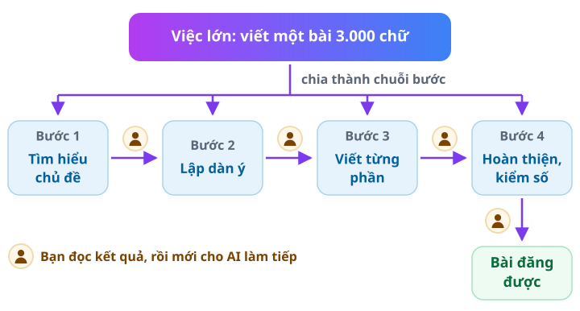
AI Assisted khác AI Agents ở chỗ ai quyết bước tiếp theo
| Điểm so | AI Assisted | AI Agents |
|---|---|---|
| Ai quyết bước tiếp theo | Bạn chia việc, ra lệnh từng bước | AI tự chọn bước và tự làm tiếp |
| Ai đọc kết quả giữa chừng | Bạn, sau mỗi bước | AI tự xem, bạn duyệt ở chỗ quan trọng |
| Hợp lúc nào | Việc mới, người mới, chạy được trên gói Free | Việc đã chạy ổn, có tiêu chí kiểm |
Claude dừng chờ bạn, hoặc Claude tự làm tiếp
AI Assisted Claude dừng sau bước 1, chờ bạn duyệt.
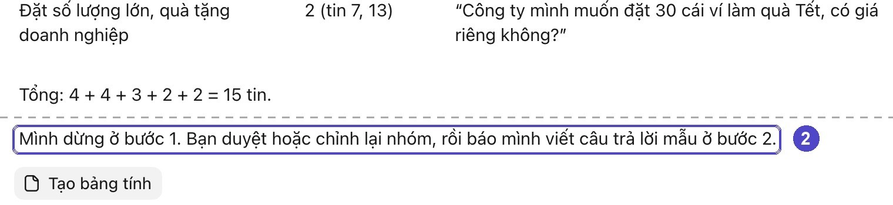
AI Agents Claude tự chia 3 bước và làm tiếp.
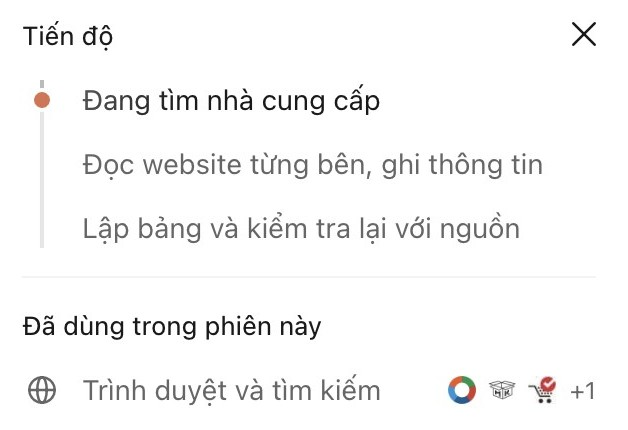
Bắt đầu ở AI Assisted: rủi ro thấp, thấy rõ từng bước
Rủi ro thấp
Bạn đọc mọi kết quả trước khi đi tiếp.
Thấy rõ AI làm tốt ở đâu
Bạn biết bước nào AI làm tốt, bước nào làm dở.
Chạy trên gói Free
Chỉ cần chat, chưa cần tính năng trả phí.
Kết quả bước trước là đầu vào bước sau
Mỗi lần AI làm một việc dễ hơn
Một việc nhỏ, một kết quả rõ.
Bạn bắt lỗi sớm
Lỗi bị chặn trước khi lan sang bước sau.
Anthropic: chuỗi prompt vẫn có ích khi bạn cần xem giữa chừng
- Vẫn có ích khi bạn cần xem kết quả giữa chừng. Model mới tự suy luận nhiều bước bên trong.
- Chuỗi hay gặp nhất: viết nháp, Claude tự soát theo tiêu chí, rồi Claude sửa.
Ảnh chụp trang Anthropic "Prompting best practices", mục Chain complex prompts, ngày 20/11/2026. Khung số do The AI Growth vẽ thêm.
Một prompt 15 yêu cầu, AI bỏ sót phần giữa
15 yêu cầu cùng lúc
Theo mình, AI thường nhớ đầu và cuối, bỏ sót phần giữa.
Mỗi lần vài yêu cầu
AI làm đủ từng phần, bạn kiểm từng phần.
11 bước, 3 nhóm, 4 chỗ mình dừng để đọc
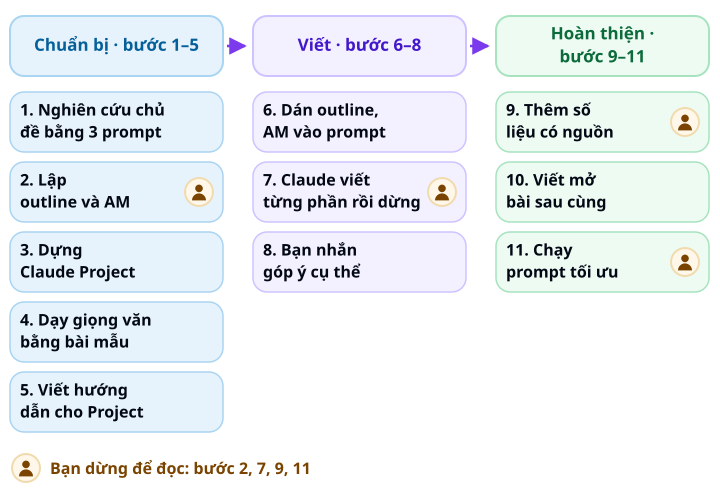
Chuẩn bị chiếm gần nửa quy trình
| Nhóm | Các bước | Bạn dừng ở đâu |
|---|---|---|
| Chuẩn bị · bước 1–5 | Nghiên cứu chủ đề bằng 3 prompt, lập outline và AM, dựng Claude Project có tài liệu công ty, dạy giọng văn bằng bài mẫu, viết hướng dẫn cho Project | Duyệt và sửa outline, AM |
| Viết · bước 6–8 | Dán outline và AM vào prompt, Claude viết từng phần rồi dừng, bạn nhắn góp ý cụ thể | Đọc từng phần |
| Hoàn thiện · bước 9–11 | Thêm số liệu có nguồn, viết mở bài sau cùng, chạy prompt tối ưu | Kiểm số liệu, duyệt bản cuối rồi mới đăng |
AM càng chi tiết, Claude càng viết đúng
Dàn ý và bảng cho từng phần
Outline là dàn ý. AM là bảng ghi mỗi phần trả lời câu hỏi gì, viết bao nhiêu chữ.
Nêu lỗi và kết quả muốn có
Ví dụ: "diễn giải bằng đoạn văn, hạn chế gạch đầu dòng". Lỗi lặp lại thì sửa prompt gốc.
Việc có kết quả dài đều chạy được theo chuỗi
| Việc | Chuỗi bước | Chỗ người duyệt |
|---|---|---|
| Proposal cho khách doanh nghiệp | Đọc yêu cầu → dàn ý → viết từng phần → kiểm giá và điều khoản | Duyệt trước khi gửi |
| Báo cáo tuần | Gom số → nhận xét → viết | Kiểm số |
| Kế hoạch nội dung tháng | Chủ đề → lịch → bài mẫu một kênh | Duyệt kế hoạch |
Nhờ Claude chia việc của bạn thành chuỗi prompt
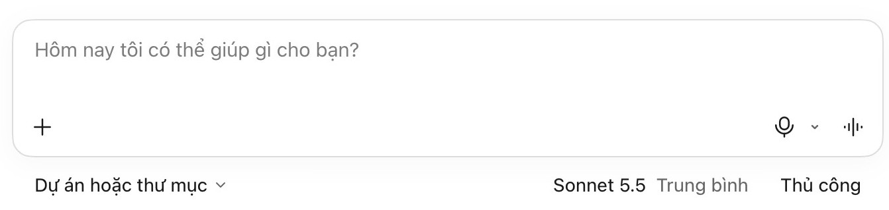
Mở chat mới, dán prompt vào ô này. Ảnh chụp app Claude ngày 11/11/2026.
- 1AI Assisted: bạn cầm lái, đọc kết quả từng bước.
- 2Chuỗi prompt chia việc lớn thành việc nhỏ. Kết quả bước trước là đầu vào bước sau.
- 3Chuỗi chạy ổn nhiều lần là ứng viên giao cho AI Agents.
Mổ xẻ quy trình: bước nào AI Assisted, bước nào AI Agents, bước nào người duyệt
Sau bài này, bạn chọn được quy trình đầu tiên an toàn, chia thành bước và gắn 4 nhãn cho từng bước.
Quy trình trả lời đánh giá sau khi gắn 4 nhãn
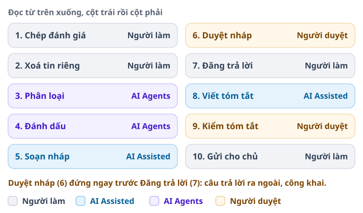
An toàn hơn là lớn
Quy trình đầu tiên quyết định đội có tin AI hay không. Chọn việc mà sai thì sửa được trước khi tới khách.
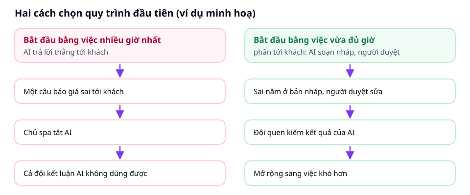
Chấm 5 tiêu chí, có tiêu chí 0 điểm thì để sau
| Tiêu chí | Câu hỏi để chấm | 2 điểm khi |
|---|---|---|
| 1 · Lặp đều | Việc này làm bao lâu một lần? | Mỗi ngày hoặc mỗi tuần |
| 2 · Tốn giờ | Cột Giờ/tuần của Module 01 ghi bao nhiêu? | Từ 2 giờ |
| 3 · Ít rủi ro khi sai | Cột Rủi ro khi sai ghi mức mấy? | Rủi ro 1 |
| 4 · Kiểm được đầu ra | Bạn biết kết quả đúng sai bằng cách nào? | So với gốc trong vài phút |
| 5 · Dữ liệu đưa vào được | Thứ AI cần đọc nằm ở đâu? | Đã là chữ hoặc file, không nhạy cảm |
Spa chọn trả lời đánh giá Google trước
Trả lời đánh giá Google
Câu sai còn nằm ở bản nháp, có người đọc trước khi đăng.
Trả lời tin hỏi giá
Tốn giờ nhất, nhưng một câu báo giá sai là tới thẳng khách.
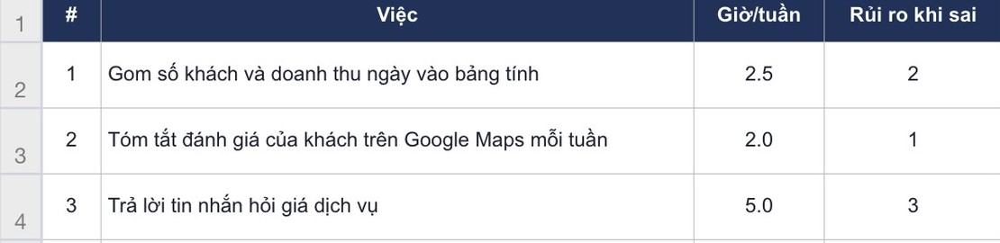
Bảng 10 việc của spa giả định ở Module 01: dòng 2 rủi ro 1, dòng 3 rủi ro 3. Ảnh chụp app Claude ngày 11/11/2026.
Một bước là một kết quả nhìn thấy được
Một file, một bảng, một bản nháp. Bỏ bước thừa trước khi giao cho AI.
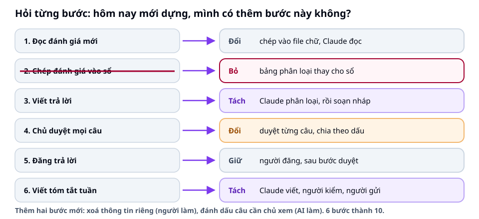
"Nếu hôm nay mới dựng quy trình này, mình có thêm bước này không?"
Mỗi bước một nhãn: ai làm, ai quyết bước tiếp theo
| Nhãn | Nghĩa | Ví dụ ở spa |
|---|---|---|
| Người làm | Người tự làm, không cần AI | Đăng trả lời lên Google |
| AI Assisted | Người ra lệnh từng bước, đọc kết quả | Soạn nháp trả lời, tháng đầu |
| AI Agents | AI tự làm, đã chạy ổn, có tiêu chí | Phân loại đánh giá |
| Người duyệt | Người duyệt trước bước ra ngoài | Duyệt nháp trước khi đăng |
Ba câu hỏi gắn nhãn cho từng bước
Đi từ câu 1 xuống. Bước mới luôn bắt đầu ở AI Assisted.
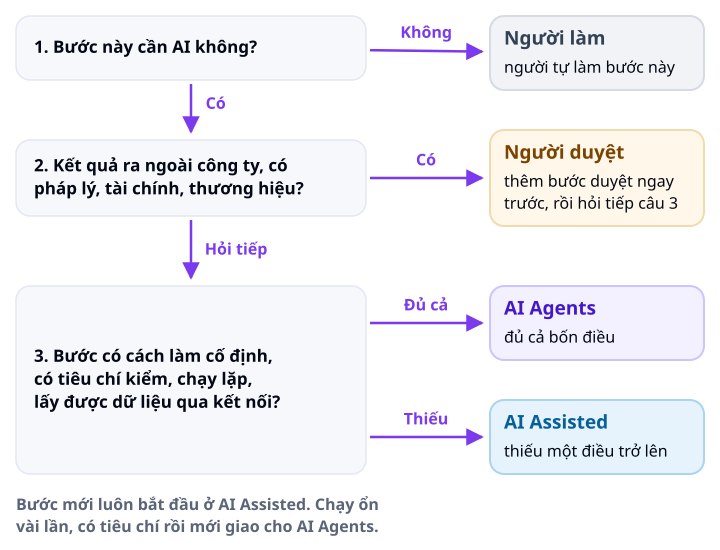
Chạy ổn vài lần, có tiêu chí rồi mới giao
AI Agents phân loại đánh giá, khi đã chạy ổn. AI Assisted soạn nháp trả lời, trong tháng đầu.
Bước AI làm thì chọn model và mức nỗ lực theo bài 3.5.
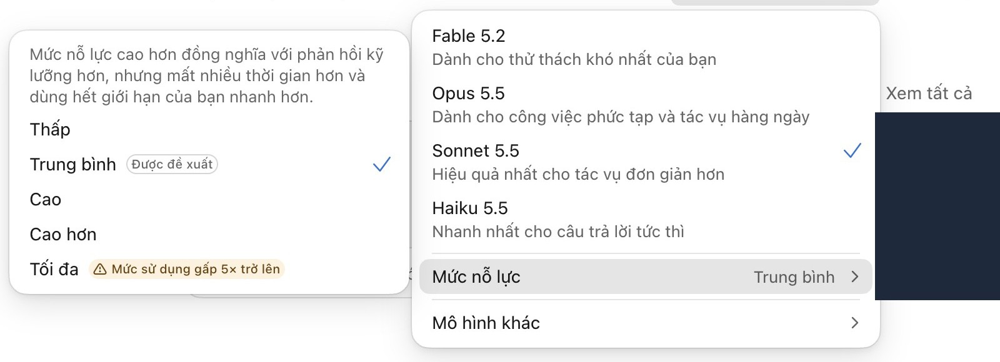
Chọn model và mức nỗ lực cho bước AI làm. Ảnh chụp app Claude ngày 11/11/2026, gói cao hơn Pro.
AI đánh dấu chỗ cần xem, người quyết
Claude xin phép trước khi dùng trình duyệt trên một trang mới.
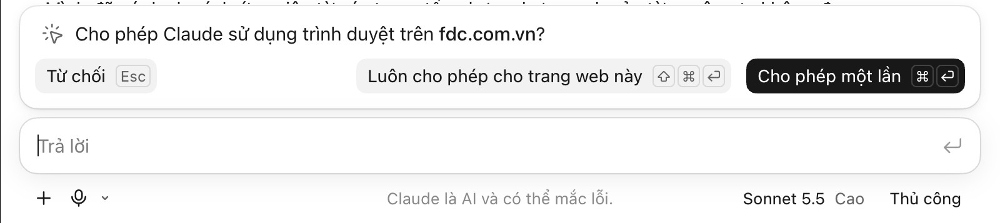
Chế độ Thủ công: Claude hỏi trước khi dùng công cụ mới.
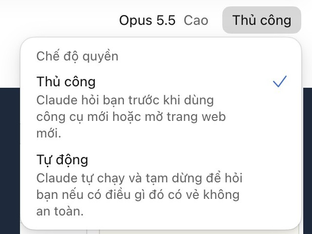
Gắn 4 nhãn cho quy trình bạn chọn
- 1Quy trình đầu tiên chọn theo độ an toàn, không chọn theo độ lớn.
- 2Bỏ bước thừa trước, gắn 4 nhãn sau.
- 3Bước mới bắt đầu ở AI Assisted. Bước ra ngoài luôn có người duyệt.
Mổ xẻ demo quy trình doanh nghiệp thực tế, rồi bạn làm theo
Sau bài này, bạn chỉ ra bước AI Agents và bước người duyệt trong 3 quy trình thật, rồi chạy thử một bước trên quy trình của mình.
Người duyệt nằm ở đâu trong từng quy trình
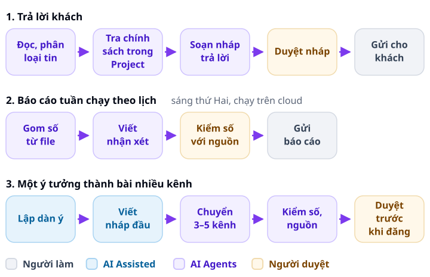
Claude soạn nháp, người duyệt rồi mới gửi
| Bước | Nhãn | Ghi chú |
|---|---|---|
| Đọc, phân loại tin khách | AI Agents | Việc lặp, có tiêu chí phân loại |
| Tra chính sách trong Project | AI Agents | Context đúng, bài 3.3 |
| Soạn nháp trả lời | AI Assisted | Claude chỉ soạn nháp |
| Duyệt và gửi | Người duyệt | Chặn công cụ gửi của connector (Module 06) |
Mô tả việc một lần, Claude chạy mỗi sáng thứ Hai
Ảnh chụp trang hỗ trợ Anthropic "Schedule recurring tasks in Claude Cowork", ngày 20/11/2026. Khung số do The AI Growth vẽ thêm.
- Mô tả một lần: Claude làm theo lịch, giao bản báo cáo, bản tin mỗi lần.
- Có ở mọi gói trả phí: Pro, Max, Ultra, Team, Enterprise.
Always ask: việc theo lịch có thể dừng chờ
- Mỗi việc theo lịch chạy thành một phiên riêng. Bạn xem kết quả khi xong.
- Always ask: việc theo lịch có thể dừng chờ bạn trả lời, hoặc làm tiếp mà bỏ qua công cụ đó.
Ảnh chụp trang hỗ trợ Anthropic "Schedule recurring tasks in Claude Cowork", mục How scheduled tasks work, ngày 20/11/2026. Khung số do The AI Growth vẽ thêm.
Đặt lịch ở mục Tác vụ đã lên lịch
Bấm Tác vụ mới (1), chọn Tạo với Claude hoặc Thiết lập thủ công (2).
Việc chạy trên cloud, máy tắt vẫn chạy.
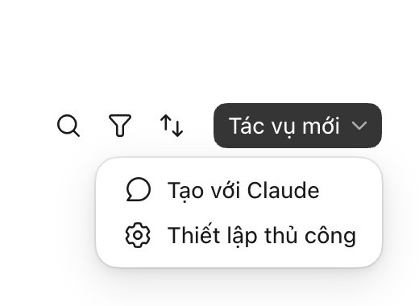
Trang Tác vụ đã lên lịch, ảnh chụp app Claude ngày 11/11/2026.
Dùng quy trình mẫu của bài 3.5, gắn thêm nhãn
| Bước | Nhãn | Vì sao |
|---|---|---|
| Dàn ý | AI Assisted | Người sửa nhiều, người duyệt dàn ý |
| Nháp đầu | AI Assisted | Người sửa nhiều |
| Chuyển thành 3–5 kênh | AI Agents | Theo Skill, bài đã duyệt |
| Kiểm số và nguồn | AI Assisted | Người đọc lại từng số |
| Duyệt bản cuối | Người duyệt | Đăng dưới tên thương hiệu |
Mỗi bước AI làm cần 5 thứ
Bản giao việc 5 phần · dữ liệu đã che thông tin riêng · mẫu đầu ra kèm ví dụ đã duyệt · Skill · kết nối.
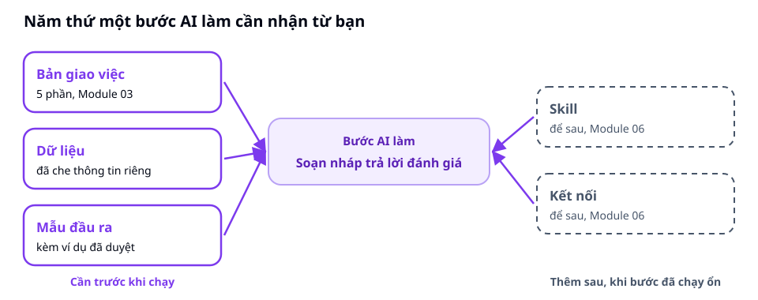
Dán tay trước, chạy ổn mới nối
Dán dữ liệu vào một cuộc trò chuyện.
Lên Project, Skill.
Lên connector, việc theo lịch (Module 06).
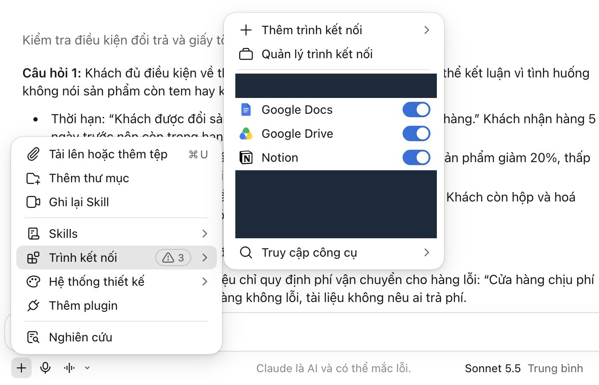
Menu Trình kết nối, ảnh chụp app Claude ngày 11/11/2026. Danh sách của bạn sẽ khác.
Claude in Chrome còn chậm và tốn lượt.
15 đánh giá mỗi tuần: chép tay khoảng 10 phút vẫn rẻ hơn để Claude tự mở trình duyệt đọc.
- 1Mở bảng 4 nhãn của bài 4.2. Điền Thẻ chuẩn bị cho mọi bước AI làm: Có, Thiếu hoặc Để sau.
- 2Chọn 1 bước AI Assisted, chạy bằng chuỗi prompt của bài 4.1.
- 3Gói Pro trở lên: giao 1 bước AI Agents bằng một tin nhắn mô tả kết quả. Gói Free: làm lại bước 2 với bước khác.
- 4Đặt điểm dừng: Claude dừng ở bản nháp, bạn duyệt. Việc cần file trên máy thì mở Claude Desktop.
- 5Ghi bước nào chạy ổn, bước nào lùi về AI Assisted, và ghi số phút để Module 13 so lại.
- 1Mỗi quy trình thật có chỗ cho AI Agents và chỗ bắt buộc người duyệt.
- 2Mỗi bước AI làm cần đủ 5 thứ của Thẻ chuẩn bị.
- 3Dán tay trước, chạy ổn mới nối.
Vẽ quy trình đầu tiên của đội
Bạn nộp bản vẽ một trang của quy trình đầu tiên, mang sang Module 06 để dựng. Bạn ghép kết quả của 4.1, 4.2, 4.3, không viết mới.
Sáu khối, mỗi khối lấy từ một bài
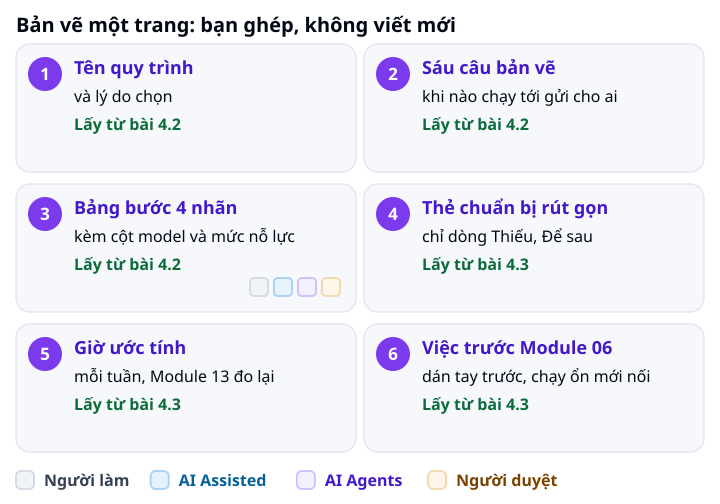
Sáu phần và nơi lấy
| Phần | Ghi gì | Lấy từ bài |
|---|---|---|
| 1 · Tên quy trình | Tên và lý do chọn | 4.2 |
| 2 · Sáu câu bản vẽ | Từ khi nào chạy tới gửi cho ai | 4.2 |
| 3 · Bảng bước | 4 nhãn, cột model và mức nỗ lực | 4.2, 3.5 |
| 4 · Thẻ chuẩn bị rút gọn | Chỉ dòng Thiếu, Để sau | 4.3 |
| 5 · Giờ ước tính | Mỗi tuần, để Module 13 đo lại | 4.3 |
| 6 · Việc trước Module 06 | Dán tay trước, chạy ổn mới nối | 4.3 |
Thiếu câu nào, Claude tự đoán câu đó
Khi nào chạy?
Dữ liệu vào từ đâu?
Bước nào AI làm?
Bước nào người duyệt trước khi gửi?
Kết quả ra ở đâu?
Gửi cho ai?
- 1Gom kết quả cuối của 4.1, 4.2, 4.3 vào một chỗ. Chỉ lấy kết quả.
- 2Mở chat mới, dán prompt ghép bản vẽ kèm phần đã gom.
- 3Nhờ Claude liệt kê bước gửi ra ngoài, kiểm có người duyệt ngay trước chưa.
- 4Gom mọi chỗ cần sửa vào một tin nhắn. Dặn sửa đúng chỗ.
- 5Lưu bản vẽ vào Project hoặc thư mục của bạn, rồi nộp.
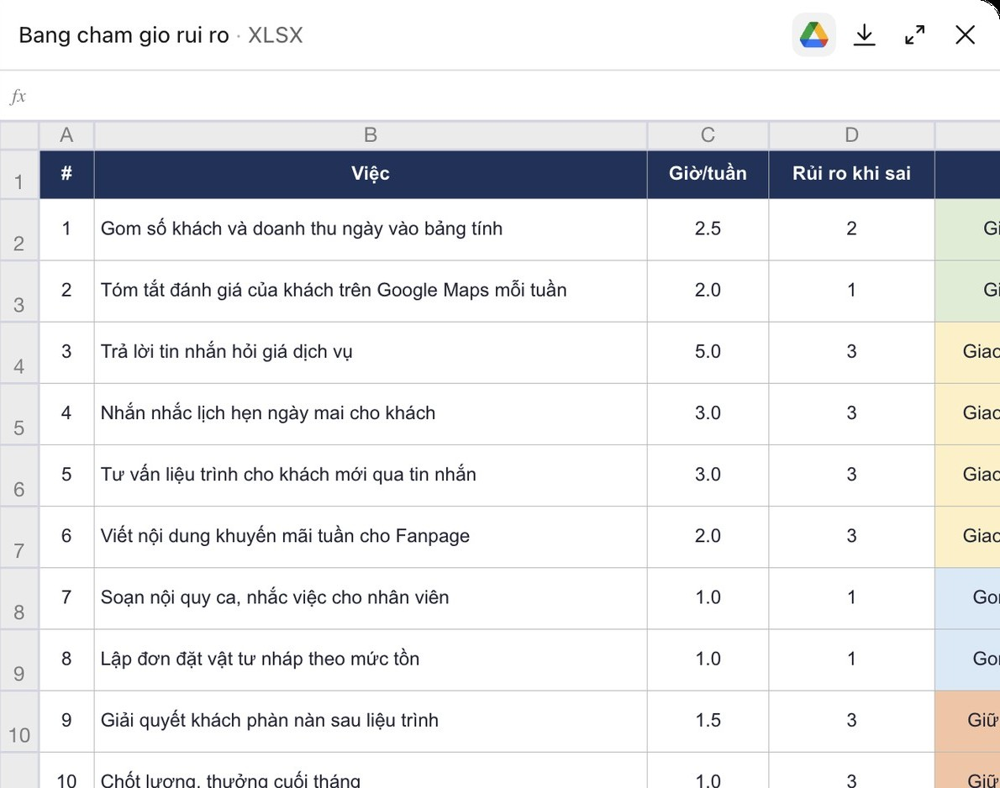
Bước 2: Claude dựng tài liệu ở khung bên cạnh, có nút tải về. Ảnh chụp app Claude ngày 11/11/2026, file khác bài này.
Nhờ Claude soát theo từng yêu cầu
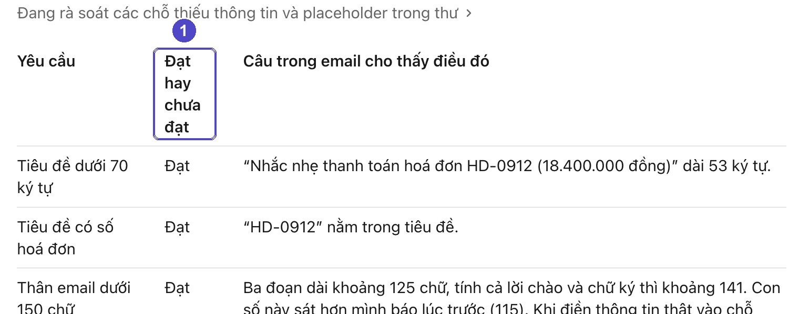
Ví dụ Claude soát một email theo tiêu chí ở Module 03. Ảnh chụp app Claude ngày 11/11/2026.
Lưu bản vẽ vào Dự án
Mục Dự án (Projects) trên thanh bên. Module 06 mở lại bản vẽ này để dựng.

Thanh bên app Claude, ảnh chụp ngày 11/11/2026.
Bản vẽ của spa, đủ 6 phần
AI Agents phân loại đánh giá, khi đã chạy ổn.
AI Assisted soạn nháp trả lời, tháng đầu.
Người duyệt duyệt câu được đánh dấu. Người làm đăng trả lời.
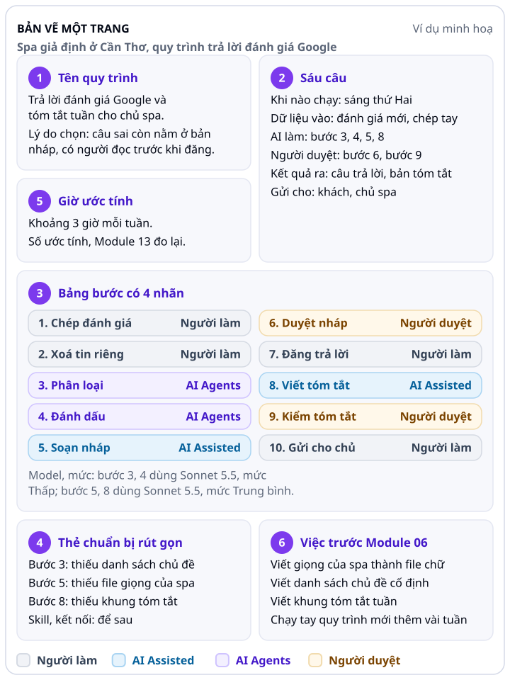
- 1Bản vẽ ghép từ 3 bài, gọn trong một trang.
- 2Sáu câu bản vẽ trả lời đủ trước khi dựng.
- 3Mọi bước gửi ra ngoài có người duyệt đứng ngay trước.
Tiếp theo: Module 05
Dùng AI an toàn: dữ liệu và quy định.